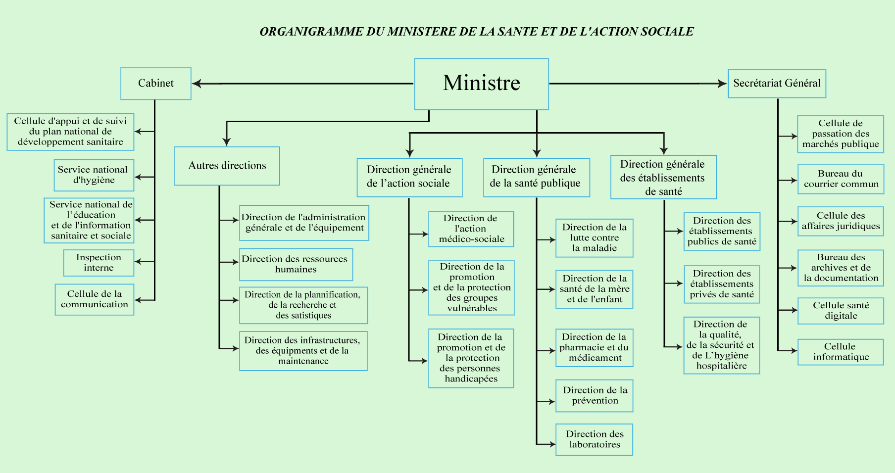

Ministère de la Santé et de l'Hygiene Publique
Republique du Sénégal
Un Peuple, Un but, Une foi
Menu
Le Ministère
Le Cabinet
Les Directions
Les Services Rattachés
Les Regions Medicales
Organigramme
Les anciens ministres
Agenda
Partenaires
Politique de santé
Pyramide de Santé
Politique Nationale des Urgences
Reference Contre Reference
Politique Sanitaire
Les structure de Santé
Reglement Sanitaire International
Evaluation Externe Conjointe
Les publications
Documentation Générales
Texts Legislatifs
Directions Services et Divisions
Bulletin d'information
Les structure de Santé
Reglement Sanitaire International
Evaluation Externe Conjointe
Mediathèque
Phototèque
Videothèque
Programmes et projets
Actualités
Communiqués
Contact
Organigramme du Ministére de la Santé et de l'Action Sociale

Le Ministére
Le Cabinet
Les Directions
Les Services Rattachés
Les Régions Médicales
Organigramme